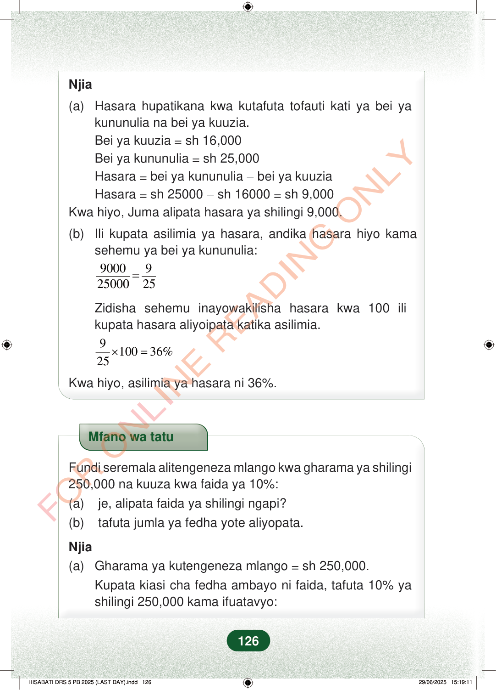

Njia(a)Hasara hupatikana kwa kutafuta tofauti kati ya bei yakununulia na bei ya kuuzia.Bei ya kuuzia=sh 16,000Bei ya kununulia=sh 25,000Hasara=bei ya kununulia−bei ya kuuziaHasara=sh 25000−sh 16000=sh 9,000Kwa hiyo, Juma alipata hasara ya shilingi 9,000.(b)Ili kupata asilimia ya hasara, andika hasara hiyo kamasehemu ya bei ya kununulia:900092500025=Zidisha sehemu inayowakilisha hasara kwa 100 ilikupata hasara aliyoipata katika asilimia.910036%25×=Kwa hiyo, asilimia ya hasara ni 36%.Mfano wa tatuFundi seremala alitengeneza mlango kwa gharama ya shilingi250,000 na kuuza kwa faida ya 10%:(a) je, alipata faida ya shilingi ngapi?(b) tafuta jumla ya fedha yote aliyopata.Njia(a)Gharama ya kutengeneza mlango=sh 250,000.Kupata kiasi cha fedha ambayo ni faida, tafuta 10% yashilingi 250,000 kama ifuatavyo:126
Njia
(a) Hasara hupatikana kwa kutafuta tofauti kati ya bei ya
kununulia na bei ya kuuzia. Bei ya kuuzia = sh 16,000 Bei ya kununulia = sh 25,000 Hasara = bei ya kununulia − bei ya kuuzia Hasara = sh 25000 − sh 16000 = sh 9,000 Kwa hiyo, Juma alipata hasara ya shilingi 9,000.
(b) Ili kupata asilimia ya hasara, andika hasara hiyo kama
sehemu ya bei ya kununulia:
9000 9 25000 25 =
Zidisha sehemu inayowakilisha hasara kwa 100 ili kupata hasara aliyoipata katika asilimia.
9 100 36% 25 × =
Kwa hiyo, asilimia ya hasara ni 36%.
Mfano wa tatu
Fundi seremala alitengeneza mlango kwa gharama ya shilingi 250,000 na kuuza kwa faida ya 10%: (a) je, alipata faida ya shilingi ngapi? (b) tafuta jumla ya fedha yote aliyopata.
Njia (a) Gharama ya kutengeneza mlango = sh 250,000. Kupata kiasi cha fedha ambayo ni faida, tafuta 10% ya shilingi 250,000 kama ifuatavyo:
126
Hatua za kupata hasara ya shilingi 9,000 kutoka bei ya kununulia shilingi 25,000 na bei ya kuuza shilingi 16,000. Pia inaonyesha kwamba asilimia ya hasara ni 36%.Njia(a) Hasara hupatikana kwa kutafuta tofauti kati ya bei ya kununulia na bei ya kuuzia.Bei ya kuuzia = sh 16,000Bei ya kununulia = sh 25,000Hasara = bei ya kununulia − bei ya kuuziaHasara = sh 25000 − sh 16000 = sh 9,000Kwa hiyo, Juma alipata hasara ya shilingi 9,000.(b) Ili kupata asilimia ya hasara, andika hasara hiyo kama sehemu ya bei ya kununulia:<math><mrow><mfrac><mn>9000</mn><mn>25000</mn></mfrac><mo>=</mo><mfrac><mn>9</mn><mn>25</mn></mfrac></mrow></math>Zidisha sehemu inayowakilisha hasara kwa 100 ili kupata hasara aliyoipata katika asilimia.<math><mrow><mfrac><mn>9</mn><mn>25</mn></mfrac><mo>×</mo><mn>100</mn><mo>=</mo><mn>36</mn><mi>%</mi></mrow></math>Kwa hiyo, asilimia ya hasara ni 36%.Mfano wa tatu wa hisabati kuhusu fundi seremala aliyetengeneza mlango kwa gharama ya shilingi 250,000 na kuuza kwa faida ya 10%. Unauliza kiasi cha faida na jumla ya fedha aliyopata.Mfano wa tatuFundi seremala alitengeneza mlango kwa gharama ya shilingi 250,000 na kuuza kwa faida ya 10%:(a) je, alipata faida ya shilingi ngapi?(b) tafuta jumla ya fedha yote aliyopata.Njia(a) Gharama ya kutengeneza mlango = sh 250,000.Kupata kiasi cha fedha ambayo ni faida, tafuta 10% ya shilingi 250,000 kama ifuatavyo: